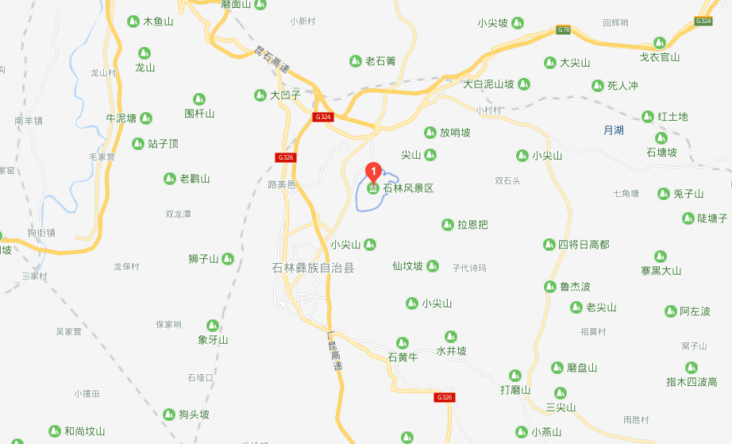

开放时间：7:00-18：00（取票时间：9:00以后）
电话：0731-55486215
推荐游玩时间：3-10月
景点概况：
石林风景区（Stone Forest Scenic）：世界自然遗产，世界地质公园，国家AAAAA级旅游景区，国家重点风景名胜区，国家地质公园，全国文明风景旅游区，最佳资源保护中国十大风景名胜区。
石林风景区又称为云南石林，位于云南省昆明市石林彝族自治县境内，面积350平方公里，景奇物丰，风情浓郁，石林是阿诗玛的故乡。
石林形成于2.7亿年前，是世界喀斯特地貌的精华，拥有世界上喀斯特地貌演化历史最久远、分布面积最广、类型齐全、形态独特的古生代岩溶地貌群落，被誉为“天下第一奇观”。风景区由石林、黑松岩（乃古石林）、飞龙瀑（大叠水）、长湖、圭山、月湖、奇风洞等组成，以雄、奇、险、秀、幽、奥、旷著称。
石林风景区范围广袤，山光水色各具特色，石牙、峰丛、溶丘、溶洞、溶蚀湖、瀑布、地下河等景观错落有致，是最适宜人居的生态环境，是最佳旅游目的地，是旅游者的天堂。
地址：云南省昆明市石林彝族自治县
